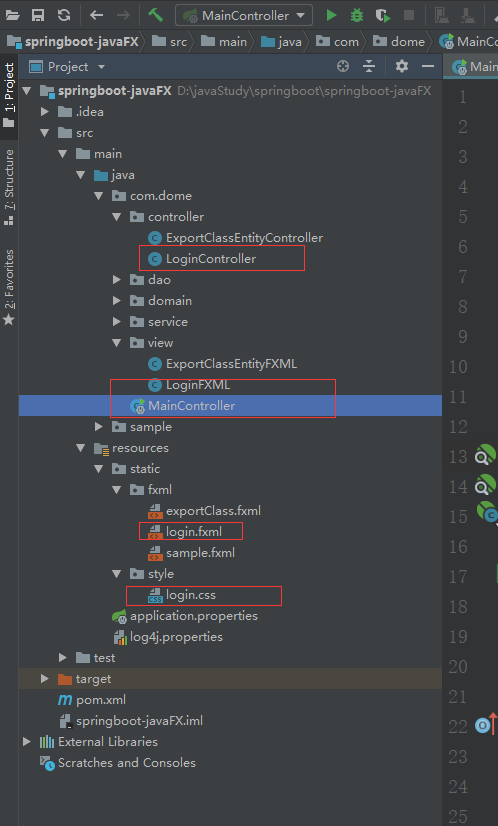

下面来介绍创建maven的javaFX+springboot项目，基于用户界面与后天逻辑分离的方式，用户界面使用fxml文件来常见，类似于jsp，可以引入css文件修饰界面
maven依赖
<dependency>
<groupId>org.springframework.boot</groupId>
<artifactId>spring-boot-starter-actuator</artifactId>
<version>${spring.boot.version}</version>
</dependency>
<dependency>
<groupId>org.springframework.boot</groupId>
<artifactId>spring-boot-starter</artifactId>
<version>${spring.boot.version}</version>
</dependency>
<dependency>
<groupId>de.roskenet</groupId>
<artifactId>springboot-javafx-support</artifactId>
<version>${springboot-javafx-support.version}</version>
</dependency> <?xml version="1.0" encoding="UTF-8"?>
<?import javafx.geometry.*?>
<?import javafx.scene.control.*?>
<?import javafx.scene.layout.*?>
<?import javafx.scene.text.*?>
<AnchorPane id="AnchorPane" maxHeight="-Infinity" maxWidth="-Infinity" minHeight="-Infinity" minWidth="-Infinity"
prefHeight="588.0" prefWidth="802.0" xmlns:fx="http://javafx.com/fxml/1" xmlns="http://javafx.com/javafx/2.2"
fx:controller="com.dome.controller.LoginController">
<children>
<HBox layoutX="122.0" layoutY="108.0" prefHeight="372.0" prefWidth="526.0">
<children>
<Label alignment="CENTER" contentDisplay="CENTER" prefHeight="30.0" prefWidth="70.0" text="用户名" textAlignment="LEFT">
<font>
<Font size="18.0" fx:id="x1" />
</font>
<HBox.margin>
<Insets bottom="10.0" left="50.0" right="10.0" top="100.0" />
</HBox.margin>
</Label>
<TextField fx:id="userName" id="username" prefHeight="30.0" prefWidth="200.0">
<HBox.margin>
<Insets bottom="10.0" right="10.0" top="100.0" />
</HBox.margin>
</TextField>
<Label alignment="CENTER" contentDisplay="CENTER" font="$x1" prefHeight="30.0" prefWidth="70.0" text="密 码" textAlignment="LEFT">
<HBox.margin>
<Insets bottom="10.0" left="-290.0" top="140.0" />
</HBox.margin>
</Label>
<TextField fx:id="passWord" id="password" prefHeight="30.0" prefWidth="200.0">
<HBox.margin>
<Insets bottom="10.0" left="10.0" right="10.0" top="140.0" />
</HBox.margin>
</TextField>
<Button id="region" contentDisplay="CENTER" font="$x1" minHeight="28.0" mnemonicParsing="false" opacity="0.79" prefHeight="35.0" prefWidth="75.0" text="注册" textAlignment="CENTER">
<HBox.margin>
<Insets bottom="10.0" left="-240.0" top="200.0" />
</HBox.margin>
</Button>
<Button id="login" font="$x1" minHeight="28.0" mnemonicParsing="false" opacity="0.79" prefHeight="35.0" prefWidth="75.0"
text="登录" onAction="#btnClick" >
<HBox.margin>
<Insets bottom="10.0" left="60.0" top="200.0" />
</HBox.margin>
</Button>
</children>
</HBox>
</children>
</AnchorPane>import de.felixroske.jfxsupport.AbstractFxmlView;
import de.felixroske.jfxsupport.FXMLView;
@FXMLView(value = "/static/fxml/login.fxml", css = {"/static/style/login.css"},title = "用户登录")
public class LoginFXML extends AbstractFxmlView {
}可以来了解下FXMLView的参数
@Component
@Retention(RetentionPolicy.RUNTIME)
public @interface FXMLView {
String value() default "";
String[] css() default {};
String bundle() default "";
String title() default "";
String stageStyle() default "UTILITY";
}import com.dome.MainController;
import com.dome.domain.Student;
import com.dome.service.IStudentService;
import com.dome.view.LoginFXML;
import de.felixroske.jfxsupport.FXMLController;
import javafx.event.ActionEvent;
import javafx.fxml.Initializable;
import javafx.fxml.FXML;
import javafx.scene.control.Button;
import javafx.scene.control.TextField;
import org.springframework.beans.factory.annotation.Autowired;
import java.net.URL;
import java.util.List;
import java.util.ResourceBundle;
@FXMLController
public class LoginController implements Initializable {
@FXML
private Button button;
@FXML
private TextField userName;
@Autowired
private IStudentService studentService;
private ResourceBundle resourceBundle;
@Override
public void initialize(URL location, ResourceBundle resources) {
resourceBundle = resources;
}
@FXML
public void btnClick(ActionEvent actionEvent) {
List<Student> students = studentService.listAll();
userName.setText("helloWorld");
}
@FXML
public void btnLoginClick(ActionEvent actionEvent) {
MainController.showView(LoginFXML.class);
}
}import com.dome.view.ExportClassEntityFXML;
import com.dome.view.LoginFXML;
import de.felixroske.jfxsupport.AbstractJavaFxApplicationSupport;
import javafx.stage.Stage;
import org.springframework.boot.autoconfigure.SpringBootApplication;
import org.springframework.context.annotation.ComponentScan;
/**
* maven构建JavaFX+SpringBoot项目启动类
*/
@ComponentScan({"com.dome.view","com.dome.controller","com.dome.service"})
@SpringBootApplication
public class MainController extends AbstractJavaFxApplicationSupport {
public static void main(String[] args) {
launch(MainController.class, ExportClassEntityFXML.class, args);
}
@Override
public void start(Stage stage) throws Exception {
super.start(stage);
stage.setTitle("用户登录");
//窗口最大化显示
// Rectangle2D primaryScreenBounds = Screen.getPrimary().getVisualBounds();
// stage.setX(primaryScreenBounds.getMinX());
// stage.setY(primaryScreenBounds.getMinY());
// stage.setWidth(primaryScreenBounds.getWidth());
// stage.setHeight(primaryScreenBounds.getHeight());
// stage.setMaximized(true);//设置窗口最大化
// stage.setFullScreen(true);//全屏显示，Esc退出
// stage.setAlwaysOnTop(true);//始终显示在其他窗口之上
}
}其中ComponentScan用来设置扫描包的中的类。
最后项目结构入下：
